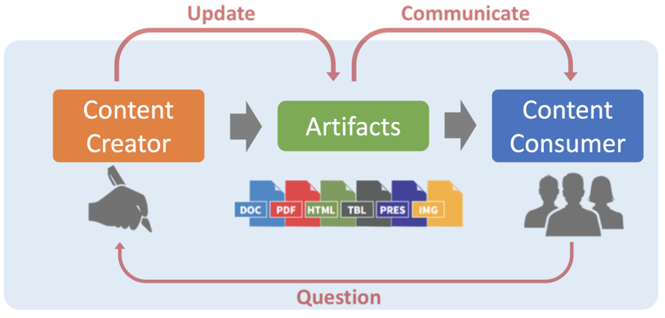
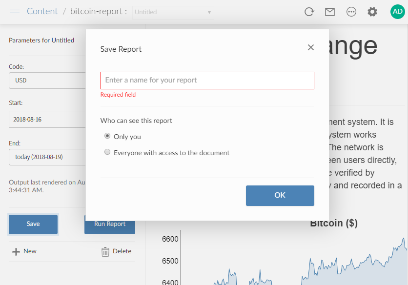

5.2 - Deploying Rmarkdown
In this session:
- Deploy and schedule reports in the form of R Markdown to RStudio Connect.
R Markdown Reports
Note for non-R users:
- R Markdown is a form of literate programming, where you embed R code chunks into Markdown text
- This means you write the body of your document using markdown, with chunks of R interspersed in the markdown.
- During rendering of the report:
- The R code chunks are executed
- Any output from these chunks are rendered as intermediate markdown with embedded figures (for the plots)
- Then this intermediate Markdown document is converted to the final format
- The final format is typically HTML, but it could also be PDF, Word or Powerpoint, among many other formats.
R Markdown Reports
The ultimate report is typically a web page, but many output formats are possible:
- HTML page
- PDF document
- Microsoft Word or PowerPoint document
- Blog
- Website
- ...
Solving the copy-and-paste nightmare

-
One of the advantages of creating automated reports is that it shortens the cycle of content creation to content consumption.
-
Rather than manually editing a report, then emailing the report, Connect lets you publish an HTML report, so you can share your work as a content URL.
Rendering a report
- To create a report, press the "knit" button
Deploying a report to Connect
-
When you deploy a report to Connect, you have choice between publishing:
-
With source code
- Giving you the option to schedule the report on Connect
- This is the more flexible option!!!
-
Finished document only

Deploying a report (with source code) to Connect
Refreshing a report from Connect, and viewing the history
- Connects keeps the rendered versions of a report, and allows you to manually trigger a referesh (if you published with source code!)
Other static content
Can Connect host other HTML, Word, PDF, content?
-
Yes, using the
rsconnect::deployDoc()function -
As an admin you will probably not do this, but your R data scientists can use the
rsconnectpackage to script deployments.
What about plots?
- Yes
Caveats:
- Only content generated from an R Markdown document can be emailed.
Parameterized Markdown
Parameterized Markdown
Parameterized reports allow users to specify some parameters to customize the analysis in a report.
References:
-
Yihui Xie, "R Markdown, the definitive guide", chapter 15
RStudio Connect recognizes parameterized Markdown and automatically creates an input pane.
Knitting with parameters in the IDE
Parameterized Markdown in Connect
Collaborators and (optionally) viewers can create a new variant of a report. This lets non-R users create their own customized variants.
Private and public reports:
- For whom:
- Private : creator.
- Public: normal access control
- By who: collaborators
Scheduled and emailed reports:
- Variants inherit all of the functionality of regular reports.

Creating a variant parameterized Markdown in Connect
- Use the fly-out pane on the left to enter new parameters and save variants.
Scheduling
Scheduling a report
If you deployed an R Markdown with code then you can:
- Schedule the report to run again
- Email the report
You can do this by changing settings in the "Schedule" tab
You can change:
- Schedule frequency
- Whether to republish the output
- Whether to send email, and the recipients

Distribution permissions
Collaborators can set up email to:
| User type | Action |
|---|---|
| Viewers | Ad-hoc and Scheduled |
| Collaborators | Ad-hoc and Scheduled |
| Other Users | Scheduled |
Viewers can send email to:
| User type | Action |
|---|---|
| Themselves | Ad-hoc |
A general purpose scheduler?
The idea that you can turn any R script into a scheduled report is very powerful.
Some possibilities:
- ETL (extract, transform, load)
- Perform a regular batch job
- Scrape data from website and store in a database

Can you give me the same report for XXX?
Create a second scheduled report for your favorite company…
….without leaving Connect
Copy and paste nightmare revisited
Deployment history
The report rendering history is retained for:
- Scheduled reports
- On-demand renderings
- Re-deploys (rendered and static content)
As the Connect sys-admin, you can configure how much history to keep
- See the Jobs section of the Admin guide.
Emailing reports
RStudio Connect allows you to:
- customize whether or not an email is sent
- add email attachments
- specify the email subject line
- dynamically change the email messages
- include plots and tables in the email body
A convenient interface is the blastula package. For more information, read the corresponding RStudio blog post and inspect the examples in the Blastula Email Gallery

Further reading on email customization
Study the Connect user guide Chapter 9: R Markdown, in particular:
- Scheduling
- Report history
- Output Metadata
- Output Files
- Resource Files
- Email Customization
- Simplifying HTML Email Creation with Blastula
Databases and scaling
Databases and scaling
How do you secure data access to databases from R Markdown?
- All the same rules apply as for Shiny
- Remember the advice at https://db.rstudio.com/best-practices/
Do you need to worry about scaling reports?
- No
- The reason is that R Markdown reports are static HTML, and is not expensive to serve
Your turn
Your turn
Next complete the exercise.
Signs of success:
- You deployed a Markdown report to Connect
- You created a scheduled update
- You triggered a run of the report and found the email in your Roundcube inbox